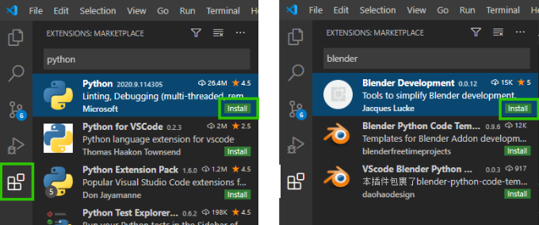
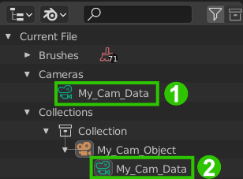
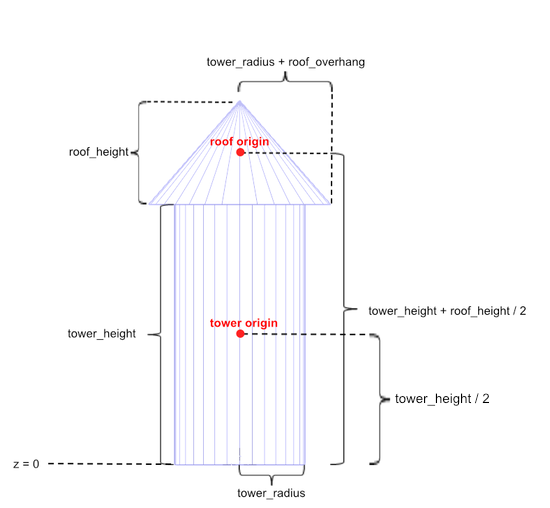
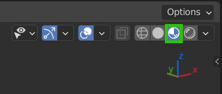
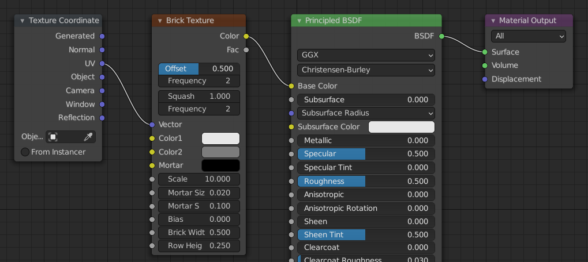
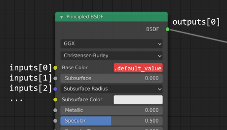
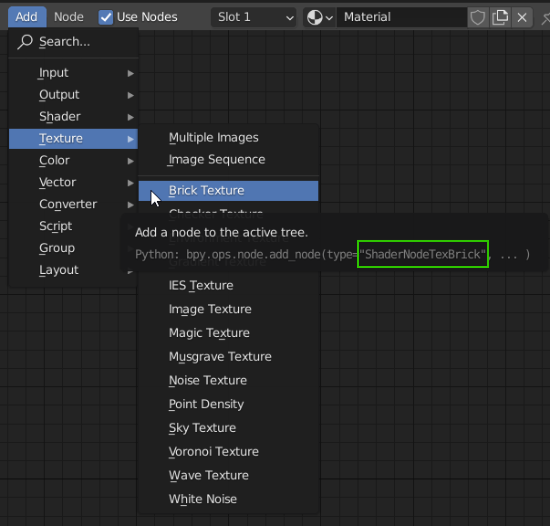
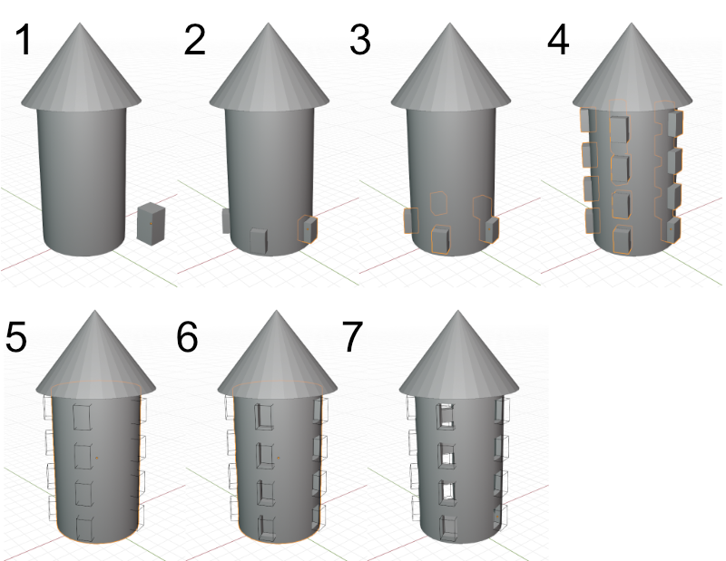

Übung 2 - Blender API & Visual Studio Code
Wenn Scripting-Projekte komplexer werden, wird es irgendwann sehr unpraktisch, nur den Blender-internen Texteditor einzusetzen. Zu diesem Zweck werden wir uns in dieser Übung die Entwicklung mit der IDE Visual Studio Code erleichtern.
Zudem werden wir die verschieden Untermodule der Blender API kennenlernen, um einen Burgturm-Generator zu programmieren.
Visual Studio Code
- Installiert zunächst Visual Studio Code.
- Installiert Python 3.7
- Download für Windows hier
- Bei der Option, ob Python zum PATH hinzugefügt werden soll, wählt JA - Neustart evtl. erforderlich
- Mit Linux (Ubuntu basierte Distributionen) im Terminal mit
sudo apt-get install python3.7- öffnet VS Code und installiert die beiden Extensions Python von Microsoft und Blender Development von Jacques Lucke.

- Öffnet nun ein Terminal in VS Code (Teminal → New Terminal)
- Installiert das fake-bpy-module mit
pip install fake-bpy-module-2.90(bzw aktuelle Blender Version). Dieses ermöglicht uns Autovervollständigung etc. für die Blender API.- Wenn ihr nun mi VS Code eine Datei als .py abspeichert und bpy importiert, sollte es keine Fehlermeldungen geben und Autovervollständigung sollte funktionieren.
- Unten links in VS Code kann (bei offener .py Datei) der Python Interpreter selektiert werden. Wählt hier eure Python 3.7 Version.
Das Blender-Python-Modul bpy
Wie in anderen Programmiersprachen auch, lassen sich in Python Bibliotheken anlegen, die abrufbare Funktionalität in vordefinierten Klassen und Methoden (Funktionen) bereit halten. Diese heißen in Python Module. Um in Python-Skripten für Blender auf die von Blender vorgehaltene Funktionalität zugreifen zu können, steht in Blender-Python-Skripten das Modul bpy (Abk. f. Blender Python) zur Verfügung.
In Blender-Skripten muss dieses Modul wie jedes andere Modul auch zunächst mit einer import-Anweisung eingebunden werden:
1func some_function(param1, param2, param3):
2 const local_const = 5
3
4 # Syntax HL Test
5 if param1 < local_const:
6 print(param1)
7 elif param2 > 5:
8 print(param2)
9 else:
10 print("Fail!")
11
12 for i in range(20):
13 print(i)
14
15 while param2 != 0:
16 param2 -= 1
17
18 match param3:
19 3:
20 print("param3 is 3!")
21 _:
22 print("param3 is not 3!")
23
24 var local_var = param1 + 3
25 return local_varWird die in Blender eingebaute interaktive Python-Konsole verwendet, ist dies automatisch schon geschehen, d.h. es kann direkt auf alles, was bpy bietet, zugegriffen werden.
Aufteilung
Das Modul bpy bietet die gesamte skript-bare Blender-Funktionalität in acht “Unterebenen” an.
- Gebt auf der Blender-Python-Console nur
bpy.ein und drückt dannStrg-Leertaste, bzw. den Button “Autocomplete”- Es werden die acht möglichen “Unterebenen” angezeigt.
Von diesen acht Gruppen unterhalb von bpy sollen hier die folgenden drei näher betrachtet werden:
bpy.opsbpy.contextbpy.databpy.types
Die wichtigsten “Untermodule” von bpy
bpy.context 
Klassen und Methoden unterhalb von bpy.context erlauben den Zugriff auf den aktuellen Kontext, in dem sich der Benutzer befindet wie z.B. Szene, Modus, Selektierte Objekte, Faces, Kanten u. Vertices.
bpy.data
bpy.data ermöglicht den Zugriff auf die interne Datenstruktur der gerade in Blender geöffneten Datei. Letztendlich wird hier das “.blend”-Datenformat abgebildet. Auf alles, was in einer .blend-Datei enthalten ist, kann mit bpy.data Zugegriffen werden. Einen Überblick darüber, was das ist, liefert die Blender File Ansicht des Outliners.
Python-Kommandos aus den Tool-Tips, die über Benutzerschnitsstellenelemente von Blender Zugriff auf Daten der Szene ermöglichen, sind meistens über bpy.data.
Ein typischer Anwendungsfall ist zum Beispiel der Zugriff auf Materialien. Dieser erfolgt mit
1bpy.data.materials["materialname"]
Oft sind Daten über verschiedene Pfade abrufbar. So sind zum Beispiel die Kameradaten hier entweder über den Aufruf der Liste mit allen Kameradaten der Blender-Datei möglich 1
1bpy.data.cameras["My_Cam_Data"]oder über die Collection, welche das Kameraobjekt My_Cam_Object und die ihm zugewiesenen Kameradaten beinhaltet 2
1bpy.data.collections["Collection"].objects["My_Cam_Object"].data

Zu beachten ist hier, dass My_Cam_Object nicht dasselbe ist wie My_Cam_Data. Ersteres ist das generische Blender-Objekt - z.b. mit dessen Transformation. Letzteres sind die ihm zugewiesenen Kameradaten - z.b. mit Brennweite und Tiefenunschärfe.
bpy.ops
bpy.ops steht für “Operatoren”. Hierunter verbergen sich die Kommandos, die über Tastenkombinationen oder Menüeinträge eingegeben werden können. Die Kommandos, die im Arbeitsbereich des Info-Editors angezeigt werden, stammen meistens aus bpy.ops.
Zu beachten ist hierbei, dass mach jedem Aufruf eines Operator ein Szenenupdate gemacht wird. In Performancerelevanten Code sollten diese daher sparsam verwendet werden. So kann beispielsweise ein Objekt entweder über den Transform-Operator verschoben,
1bpy.ops.transform.translate(value=(1,0,0))
oder dessen Position im Raum direkt angesprochen werden:
1bpy.context.object.location.x += 1
2
3#bzw nach import von mathutils mit
4bpy.context.object.location += mathutils.Vector((1,0,0))
bpy.types
Dieses Modul enthält Blenders interne Datentypen wie z.b. Objekte, Materialien, Nodes etc. Es kann z.B. für Type Hinting eingesetzt werden.
1my_material: bpy.types.Material = bpy.data.materials.new("My Material")
Andere mitgelieferte Module
Neben bpy werden auch noch andere Python-Module mit Blender mitgeliefert. Die für uns hier Wichtigen sind Folgende:
mathutils
Hier sind u.a. wichtige Typen für das Scripting in Blender und deren Methoden enthalten (Color, Euler, Matrix, Quaternion, Vector)
bmesh
Gibt Zugriff auf Blenders interne Mesh-Editing API.
gpu
Ermöglicht u.a. das Zeichnen von selbstdefinierten Shadern im Viewport.
Aufgabe - Burgturm Generator
Nun wollen wir die verschiedenen bpy Module einsetzen, um einen Burgturm bestehend aus einem Cylinder und einem Cone zu generieren
Grundform generieren
Erstellt dazu eine Klasse
Towermit folgenden Membervariablen:
tower_radiustower_heightroof_heightroof_overhang(bestimmt wie weit das Dach über die Wand hinausragt)Nutzt die folgende Grafik, um eine Methode
generate_towerzu schreiben, die den Turm in der Szene aufbaut
Materialien zuweisen
Wir wollen nun das
dataModul benutzen, um ein Material für die beiden erstellten Objekte zu erstellen.
- Wechselt die 3D-Ansicht zu **Material Preview"

- Erstellt ein neues Material in
bpy.data.materialsmit dernewFunktion und stellt sicher, dass es das Material-Nodesystem benutzt1mat_tower = bpy.data.materials.new("Tower Base Baterial") 2mat_tower.use_nodes = TrueWir wollen nun z.B. folgendes Node-Setup generieren, um dem Turm eine Steinziegel-Textur zu verpassen.

- Auf die einzelne Nodes des Materials kann nun über dessen Nodetree de zugegriffen werden.
1nodes = mat_tower.node_tree.nodes 2 3# optional mit Type Hinting: 4import typing 5nodes: typing.List[bpy.types.Nodes] = mat_tower.node_tree.nodes
- Jeder Node hat einen Array von Inputs und Outputs, die die Sockel links und rechts repräsentieren. Der erste Input des Principled BSDF Shaders ist Base Color, daher steuern wir diesen folgendermaßen an:
1nodes["Principled BSDF"].inputs[0].default_value = object_color 2# object_color ist hier die in Übung 1 bereits erstellte Variable
- Neue Nodes können über “new” Methode der vorher definierten
nodesListe erstellt werden. Die Namen der Shadernodes können (abgesehen von der bpy.types Dokumentation) über die Python-Tooltips im Add Menü des Shadereditors herausgefunden werden.
1node_brick: bpy.types.Node = nodes.new("ShaderNodeTexBrick") 2node_coords: bpy.types.Node = nodes.new("ShaderNodeTexCoord")
- Um nun die entsprechenden Sockel der Nodes zu verbinden, nutzen wir die
linksListe desnode_treedes Materials1# Hier beispielhaft zwei verschiedene Arten des Zugriffs auf die beiden verbundenen Nodes. 2# Über die vorher zugewiesene Variable, oder über den Namen des Nodes. 3mat_tower.node_tree.links.new(node_brick.outputs[0], nodes["Principled BSDF"].inputs[0])
Erstellt so nun alle benötigten Nodes und Links zwischen ihnen
Nun weisen wir dem Objekt unser Material zu. Auch hier gibt es mehrere Möglichkeiten.
1# dem aktuell selektiertem Objekt 2bpy.context.object.data.materials.append(mat_tower) 3 4# oder einem in der Variable tower_base gespeichertem Objekt 5tower_base.data.materials.append(mat_tower) 6 7# oder über das data Modul mit dem Objektnamen 8bpy.data.objects["Tower Base"].materials.append(mat_tower)
Fenster
Der wohl schwierigste Teil dieser Aufgabe sind die Fenster. Hier werden wir mit Modifiern arbeiten.
- Fügt zunächst der Klasse neue - für die Fenstergenerierung wichtige Variablen hinzu. Gebt den Variablen sinnvolle default Werte
1windows_num_circular: int = 5 2windows_num_vertical: int = 4 3windows_size: float = 1 4wall_thickness = 0.5
Wir wollen folgenden Ablauf generieren:
- Mehrere Würfel (
windows_num_circular) in Fenstergröße generieren- Würfel kreisfärmig um den Turm herum anordnen
- Würfel zu einem einzigen Objekt verbinden
- Würfel mit einem Array Modifier vertikal stapeln (
windows_num_vertical)- Würfel-
display_typeaufWIREsetzen, damit die Fenster durchsichtig sind- Turm einen Boolean-Modifier hinzufügen, der die Fensterformen aus dem Mesh “herausschneidet”
- Towerbase einen Solidify Modifier hinzufügen, um der Wand eine Dicke zu geben

Modifier werden Objekten über deren Liste
modifiersmit dernewMethode hinzugefügt. Dieser übergeben wir einen (beliebigen) namen und den großgeschriebenen Arraytypen.1mod_solid = tower_base.modifiers.new('Wall Thickness','SOLIDIFY')
- Die Python-Tooltips können wider benutzt werden, um die Pfade zu den einzelnen Parameter der Modifier herauszufinden.
1mod_solid.thickness = self.wall_thickness
Ressourcen & Tutorials zum Thema
| Art/Länge | Titel | Beschreibung | Quelle |
|---|---|---|---|
| bpy.context Dokumentation | Offizielle Blender API Dokumentation | Blender Python API Dokumentation | |
| bpy.data Dokumentation | Offizielle Blender API Dokumentation | Blender Python API Dokumentation | |
| bpy.ops Dokumentation | Offizielle Blender API Dokumentation | Blender Python API Dokumentation | |
| bpy.types Dokumentation | Offizielle Blender API Dokumentation | Blender Python API Dokumentation | |
| How to create and assign a Material Shader | Ausführliches Tutorial zu Materialien in der Blender API | YouTube - Darkfall |